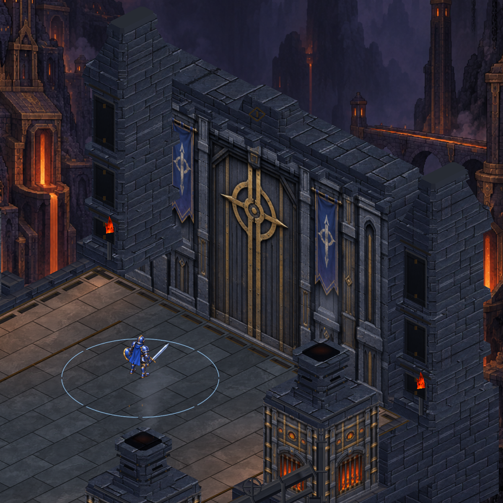
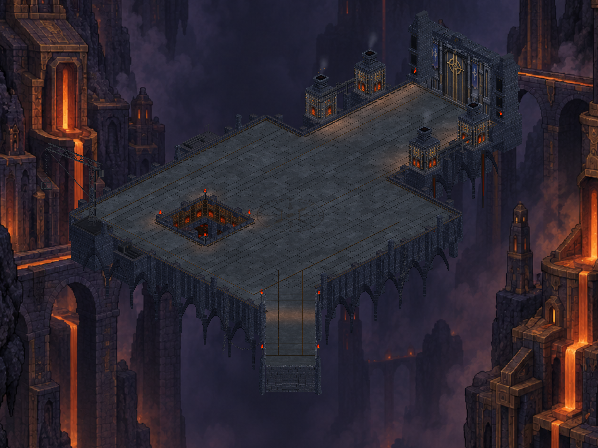
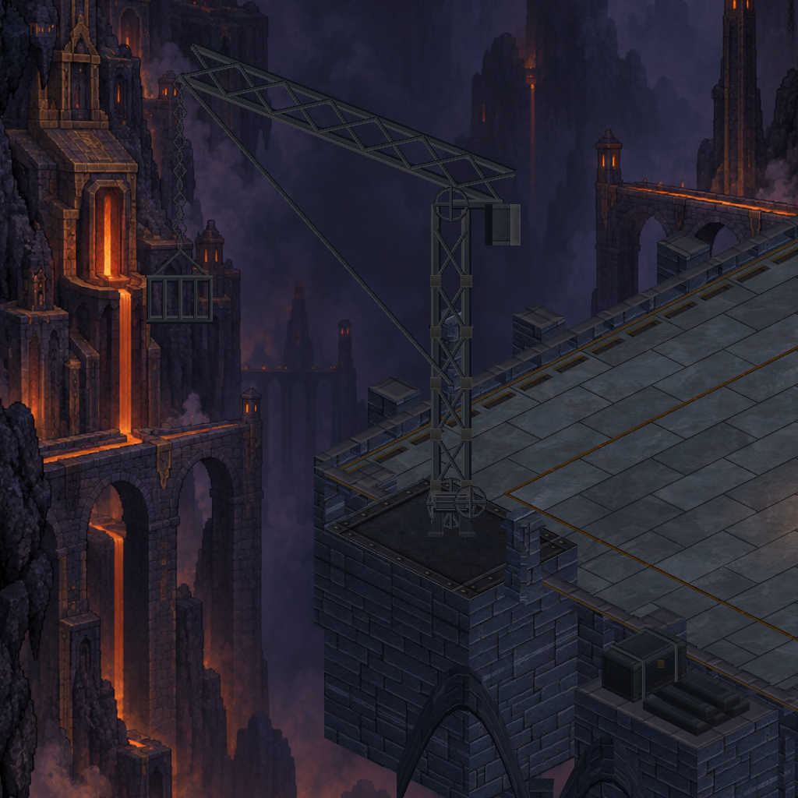
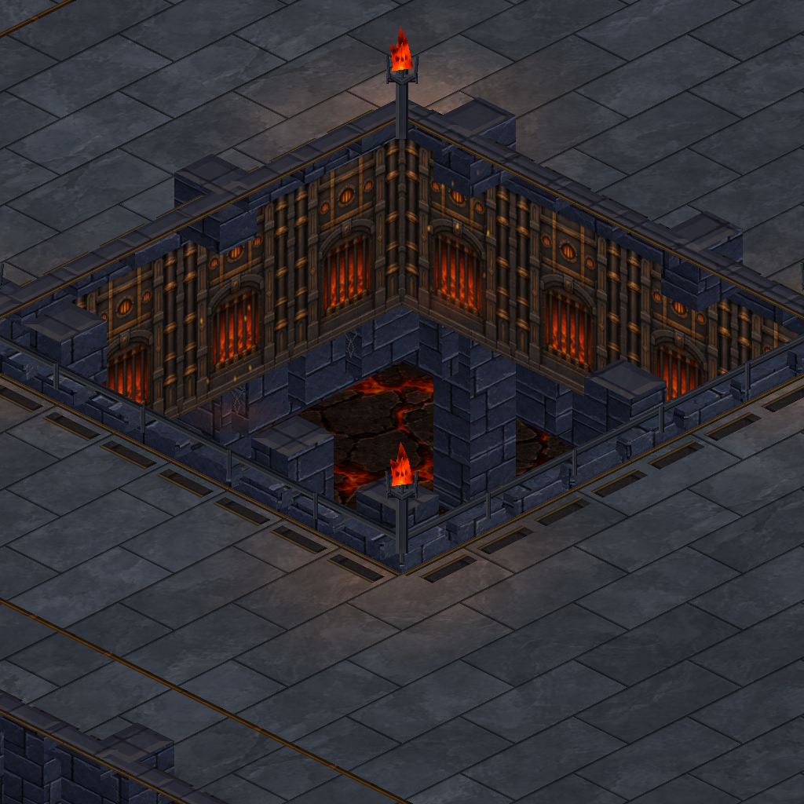
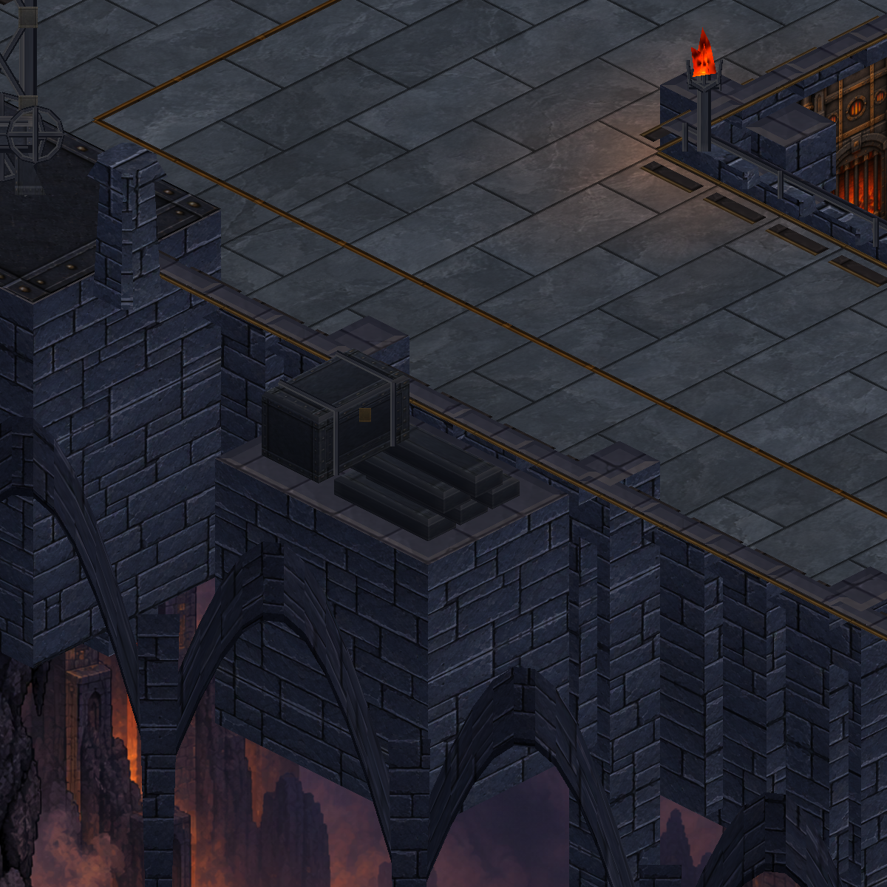
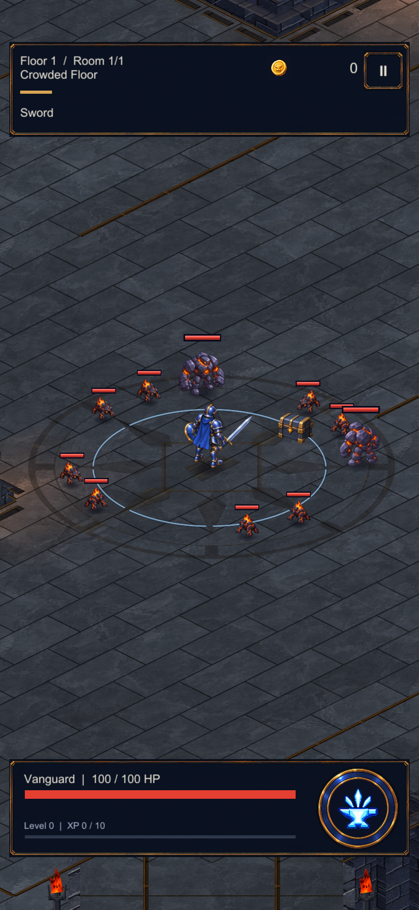

Kapı ve fırınlar
Kulelerde koyu demir paneller, tutucu kuşaklar ve küçük bronz bağlantılar. Baca yüzeylerinde bakım kapakları.

Daha sakin taş döşemeler, kapıda belirgin demir işçiliği ve çevrede üretim izleri. Avlu, fırınlar ve atölye ayrıntıları aynı haritada bir araya geliyor.
24 Eylül mimari görünümü ile bu çalışmayı aynı açıdan karşılaştır. Duman ve köz atmosferi 25 Eylül çalışmasından geliyor. Büyük görüntüyü açmak için haritaya dokun.

Gerçek Unity sahnesinden genel görünüm.
Kulelerde koyu demir paneller, tutucu kuşaklar ve küçük bronz bağlantılar. Baca yüzeylerinde bakım kapakları.

Taş platformun üzerinde dökümhanenin çalışma alanını tanımlayan vinç ve çevre düzeni.

Kuyu mimarisinin ve çevresindeki taş yüzeylerin güncel görünümü.

İstiflenmiş metal külçeler, parça sandığı, borular ve aletler; kenardaki servis raflarına yerleştirildi.

Avlunun dikey kadrajı: zemin, kahraman ve düşmanların birlikte nasıl okunduğunu gösteren gerçek Unity görüntüsü.

Bu paketin cihaz üzerinde alınmış görüntüsü.